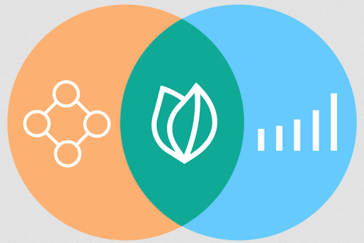

Upcoming workshop
Introduction to EcoCommons by the EcoCommons Team
Who: EcoCommons team - Xiang Zhao
When: Wednesday March 26, 10-11:30 am Online
Where: Online via Teams, join our mailing list to get emailed the link
Description:
-
We are excited to have the EcoCommons team to introduce their platform to our community. EcoCommons is a pioneering collaborative commons, uniting researchers and practitioners in a community of practice to advance ecological and environmental analysis and modelling.
This workshop will provide an overview of the EcoCommons platform, showcase the range of available datasets, and demonstrate how to download and work with that data. There is a suite of additional resources available to support your research, including Quarto, Jupyter Notebooks, and accompanying code.
This workshop will be led by EcoCommons so it’s your best opportunity to learn about the EcoCommons platform and get your questions answered.
Requirements:
If you are NOT part of an Australian or NZ University, or a government-funded research organisation, we recommend submitting a user request form before the event.
If you are part of an Australian or NZ University, or a government-funded research organisation, you will be able to login on the day via AAF authentication (see AAF list here).

Upcoming Geospatial Events
QLD International Women’s Day Breakfast by Geospatial Council of Australia
Ovolo The Valley, 3/1000 Ann st, Fortitude valley, QLD 4006
QLD International Women’s Day Breakfast
An inspiring International Women’s Day Breakfast tailored for the geospatial community.
Celebrate the achievements of women in our field with a morning of networking, engaging panel discussions, and thought-provoking sessions. Whether you’re an industry veteran or just starting out, this is your chance to connect, learn, and be inspired.
Men are warmly encouraged to join us as well. Their participation is crucial in fostering an environment of mutual respect and collaboration, essential for driving progress and innovation in our industry.
Register and purchase your tickets here.
FIG Working Week + Locate25 Conference
Geospatial Council of Australia Conference
Brisbane Convention and Exhibition Centre
The combined FIG Working Week 2025 and Locate25 conference, hosted by the Geospatial Council of Australia and the International Federation of Surveyors. This landmark event will take place in Brisbane from 6-10 April 2025 at the Brisbane Convention and Exhibition Centre, bringing together geospatial professionals from around the world for an unparalleled week of knowledge exchange, collaboration, and innovation.
Register and purchase your tickets here.